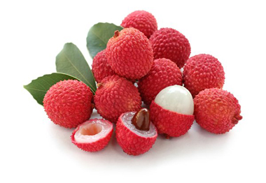

লিচুর পরিচিতি
লিচু বাঙালি ভোজনবিলাসীদের অতি প্রিয় ফল হলেও এটি কিন্তু বাংলাদেশী ফল নয়! লিচুর আদি
নিবাস চীনে। চীনের দক্ষিণাঞ্চল বিশেষ করে কাওয়াং তুং ও ফুকিং প্রদেশ লিচুর
উত্পত্তিস্থল। চীনারা লিচুকে ভালবাসা ও রোমান্সের ফল হিসেবে মর্যাদা দেয়। কথিত আছে,
প্রাচীন চীনে থাং বংশের এক রাজা তার বিশাল সৈন্যবাহিনীকে ৬০০ মাইল দূরে পাঠিয়েছিলেন
শুধুমাত্র লিচু সংগ্রহের জন্য! কারণ তিনি লিচুর রং, স্বাদ, গন্ধ ও রস উপহার হিসেবে দিতে
চেয়েছিলেন তাঁর ভালবাসার নারীকে। এ কারণেই চীনারা বিশ্বাস করে যে, যারাই লিচু মুখে
দেবে তারাই এ ফলের প্রেমে পড়বে!

ফল হিসেবে লিচুর ইতিহাস বেশ প্রাচীন। প্রায় দুই হাজার ধরে লিচু ফলের মর্যাদা পেয়েছে।
তবে অনেক ঐতিহাসিকদের মতে, যিশুখ্রীষ্টের জন্মেরও হাজার বছর আগে লিচুর জন্ম।
লিচুর ইংরেজি নাম Lychee এবং এর বৈজ্ঞানিক নাম Litchi chinensis। লিচু চিরসবুজ,
বহুবর্ষজীবী উদ্ভিদ। গাছ বপনের ৩ থেকে ৬ বছরের মধ্যে ফল দিতে শুরু করে এবং প্রতি বছর এর
ফলন বাড়তে থাকে। লিচুগাছের বয়স ২০-৩০ বছর হওয়া পর্যন্ত এর ফলন বাড়তে থাকে। লিচু ফল
কাঁচা অবস্থায় সবুজ ও পাকলে লাল বা লালচে গোলাপি হয়।
লিচুর পুষ্টি উপাদান
প্রতি ১০০ গ্রাম লিচুর ভক্ষণযোগ্য অংশে রয়েছে - এনার্জি- ৬৬ কিলোক্যালরি, শর্করা- ১৬.৬৩ গ্রাম, আঁশ- ১.৩ গ্রাম, চিনি- ১৫.২৩ গ্রাম, ফ্যাট- .৪৪ গ্রাম ,প্রোটিন- .৮৩ গ্রাম, থায়ামিন- .০১১ মিলিগ্রাম ,রিবোফ্লেভিন- .০৬৫ মিলিগ্রাম, নিয়াসিন- .৬০৩ মিলিগ্রাম, ভিটামিন বি৬- .১ মিলিগ্রাম, ভিটামিন সি- ৭১.৫ মিলিগ্রাম, ক্যালসিয়াম- ৫ মিলিগ্রাম, আয়রন- .১৩ মিলিগ্রাম, ম্যাগনেসিয়াম- ১০ মিলিগ্রাম, ম্যাংগানিজ- .০৫৫ মিলিগাম, ফলেট- ১৪ আইইইউ, ফসফরাস- ৩১ মিলিগ্রাম, পটাশিয়াম- ১৭১ মিলিগ্রাম, সোডিয়াম- ১ মিলিগ্রাম, জিঙ্ক- ০.৭ মিলিগ্রাম.
লিচুর উপকারীতা
লিচুতে রয়েছে প্রচুর পরিমাণে ভিটামিন সি। তিনটি লিচু খেলে ভিটামিন সি-এর প্রাত্যহিক
চাহিদার এক-তৃতীয়াংশ পূরণ হয়।
জাপানের কিয়োরিন বিশ্ববিদ্যালয়ে গবেষণায় দেখা গিয়েছে যে, লিচুতে রয়েছে 'অলিগোনল'
নামের এক ধরনের বিশেষ উপাদান, যা অ্যান্টিঅক্সিডেন্ট ও অ্যান্টি-ইনফ্লুয়েঞ্জা হিসেবে
বিবেচিত হয়।
লিচুতে রয়েছে আনস্যাচুরেটেড ফ্যাট যা কোলেস্টেরলের মাত্রা নিয়ন্ত্রণ করে। এটা বিটা
ক্যারোটিন অন্যান্য ভিটামিন শোষণে সহায়তা করে। লিচুতে উপস্থিত কার্বোহাইড্রেট ও আঁশ
শরীরের জন্য খুবই উপকারী।
পরিপাকতন্ত্রের ক্রিয়া সচল রাখতে ও হজমশক্তি বৃদ্ধি করতে লিচুর তুলনা নেই।
লিচু রক্ত জমাটবাঁধা প্রতিরোধ করে রক্ত প্রবাহ ঠিক রাখে। ফলে হার্টের রোগীদের স্ট্রোক
করার সম্ভাবনা প্রায় ৫০ ভাগ কমিয়ে দেয়।
লিচুতে রয়েছে প্রচুর পরিমাণে অ্যান্টিঅক্সিডেন্ট যা স্তন ক্যানসার প্রতিরোধে সাহায্য
করে।
এর প্রোটিন কোষ গঠনে সহায়তা করে। এবং শারীরিক গঠনে গুরুত্বপূর্ণ ভূমিকা রাখে।
সূর্যের অতি বেগুনী রশ্মির ক্ষতিকর প্রতিক্রিয়া থেকে ত্বককে রক্ষা করতে লিচু সাহায্য
করে।
এর ভিটামিন সি ও ক্যালসিয়াম দাঁত ও হাড়ের সুরক্ষায় গুরুত্বপূর্ণ ভূমিকা রাখে।
রোগ প্রতিরোধের ক্ষমতা বৃদ্ধিতে লিচু তুলনাহীন।